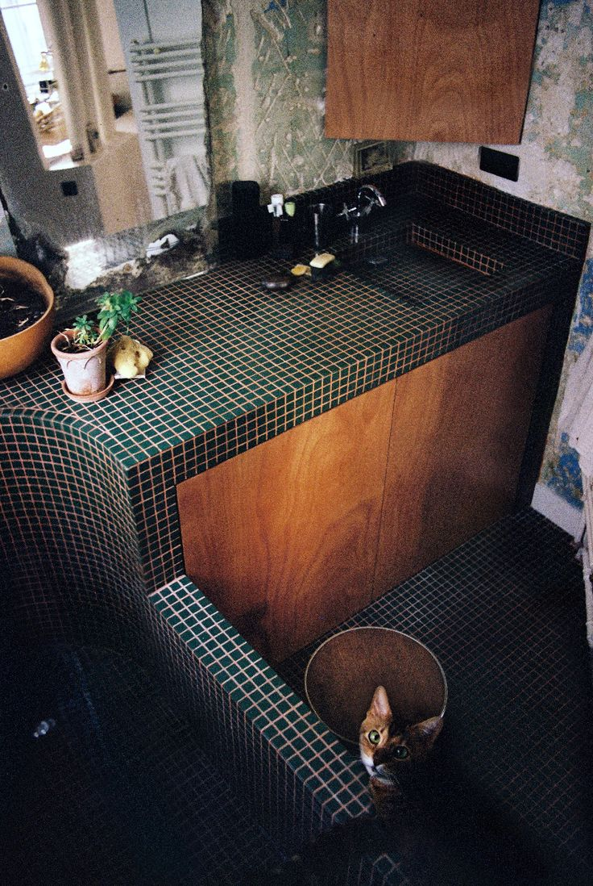
127af — Sink
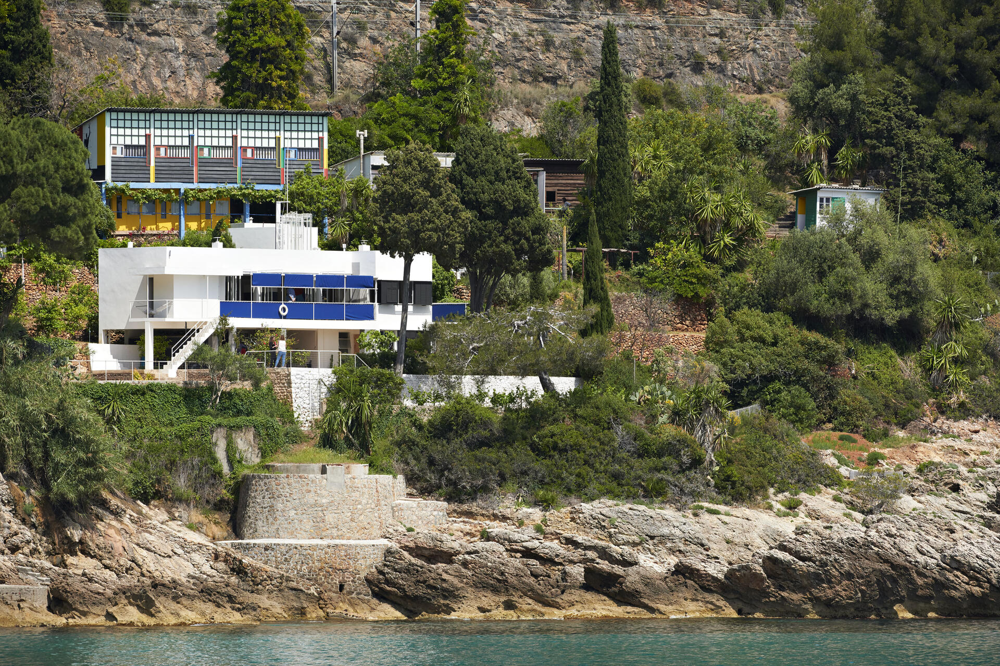
Le Corbusier — Cabanon
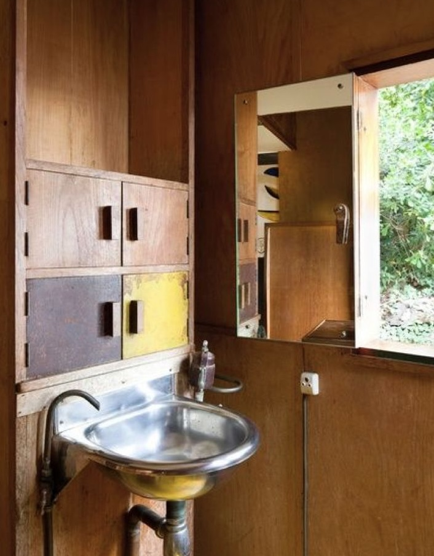
Le Corbusier — Cabanon
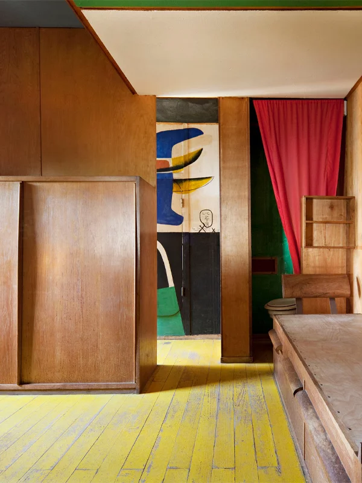
Le Corbusier — Cabanon
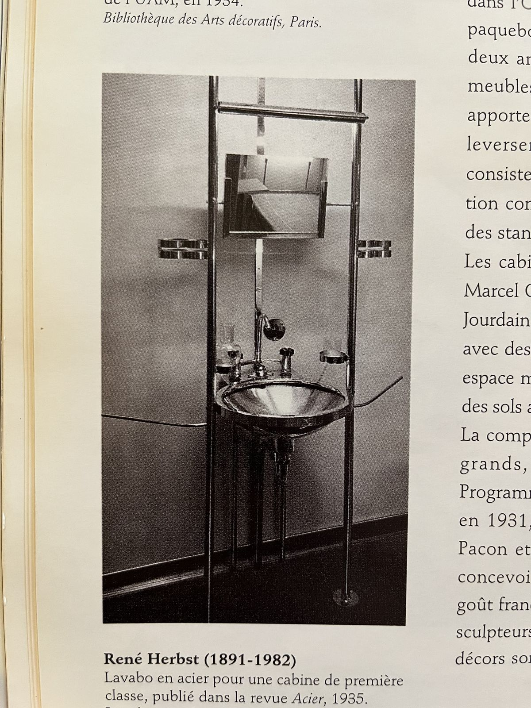
René Herbst — Sink
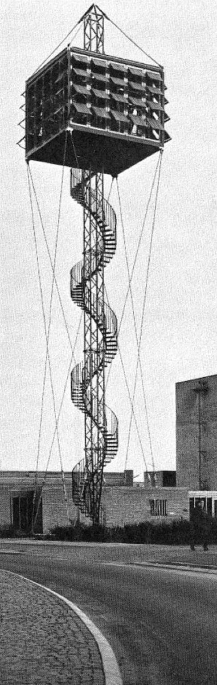
Exner Inger & Johannes — Church
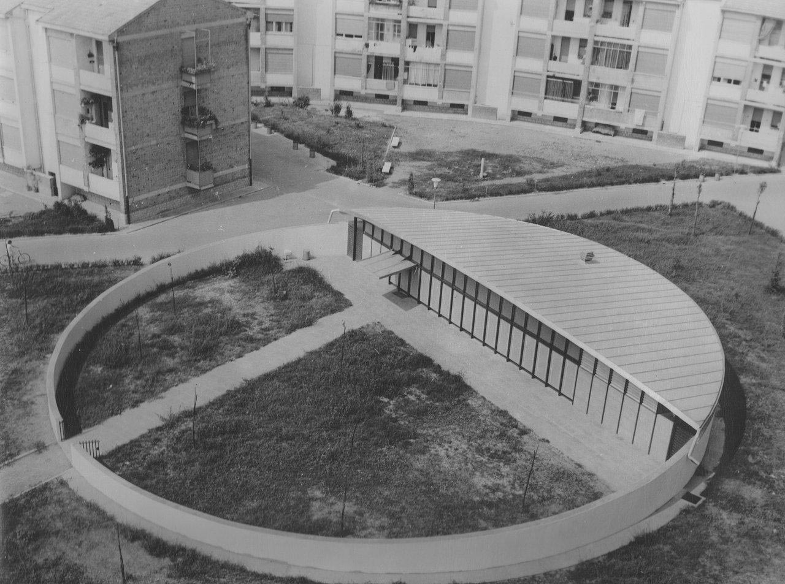
Vaccaro Giuseppe — Kindergarten, Piacenza
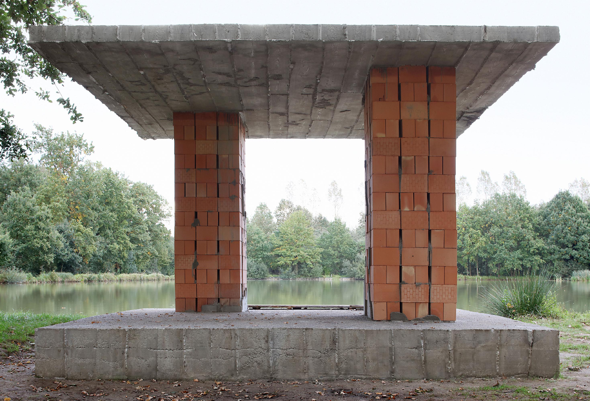
DeVylder Vinck Taillieu — Podium-Pile-Pavilion
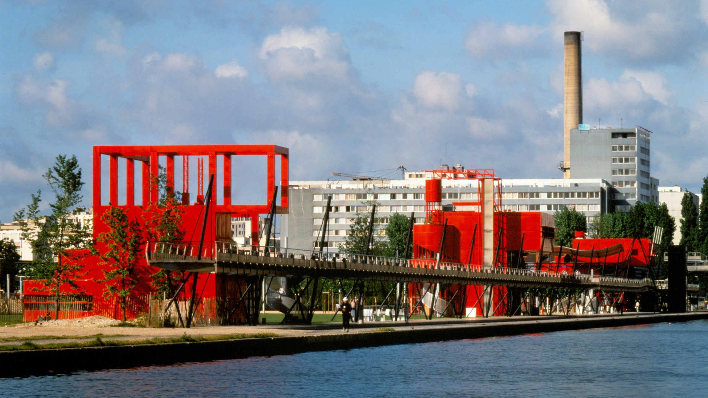
Tschumi Bernard — Parc de la Villette
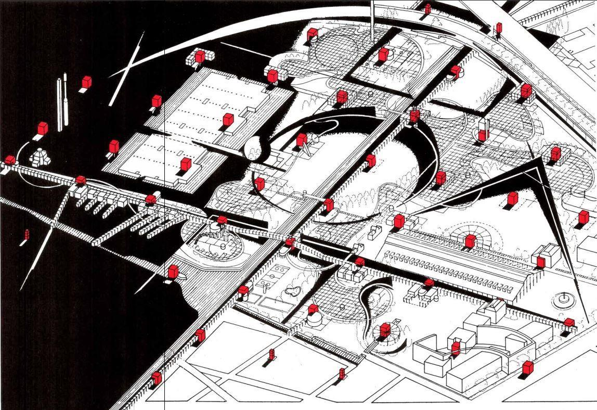
Tschumi Bernard — Parc de la Villette
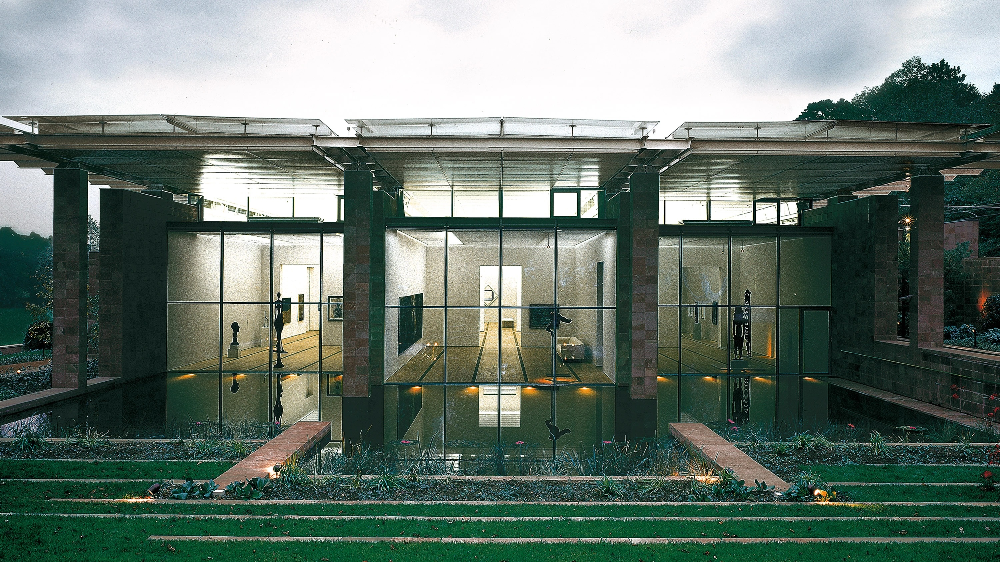
Renzo Piano — Fondation Beyeler
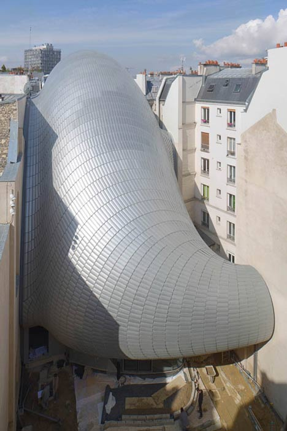
Renzo Piano — Pathe Foundation
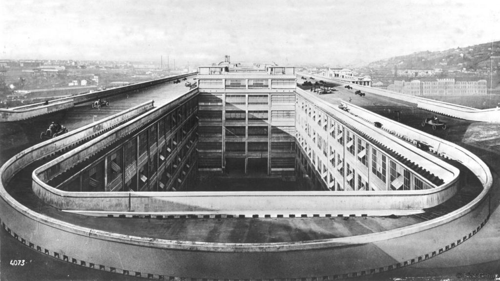
Matte Trucco Giacomo — fiat werk
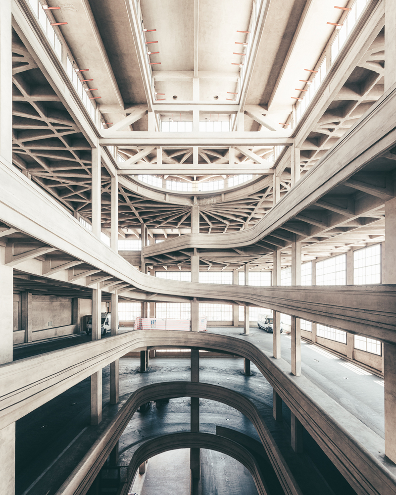
Matte Trucco Giacomo — fiat werk